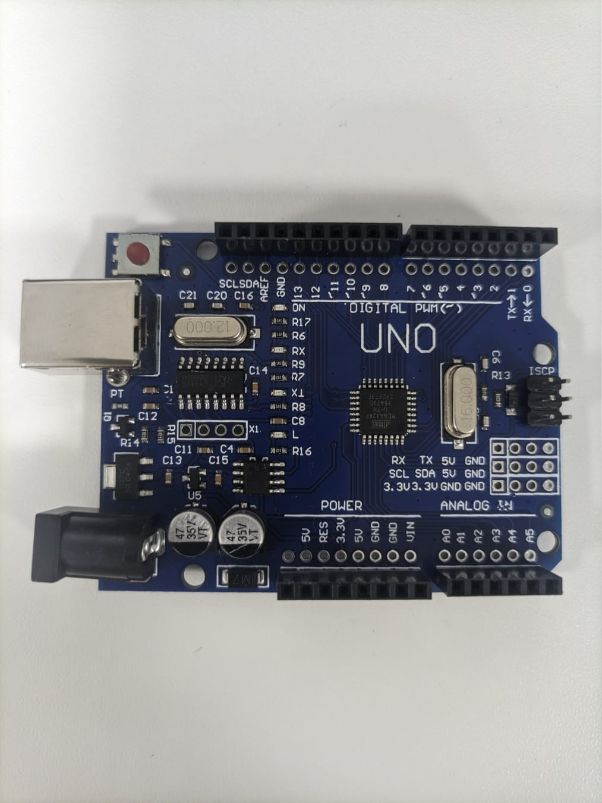
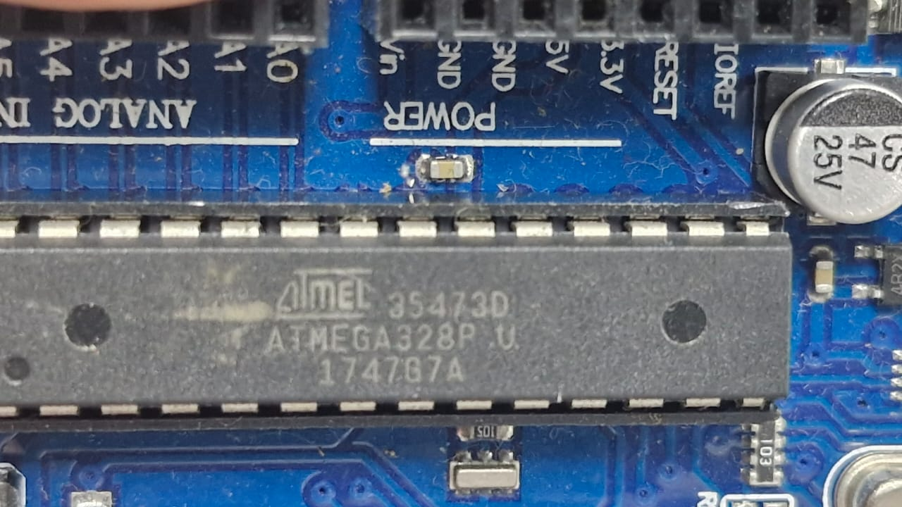
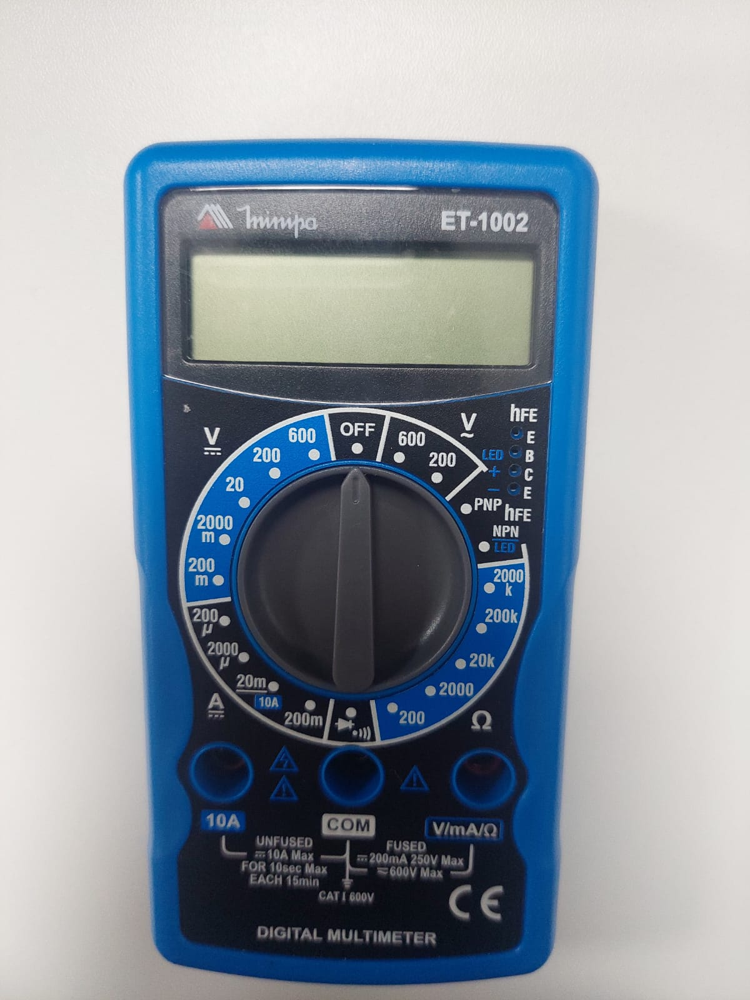
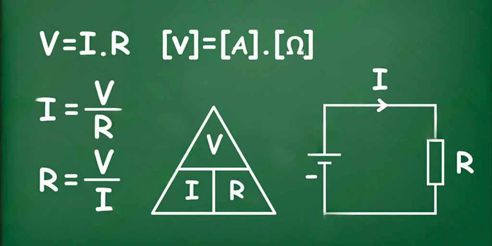
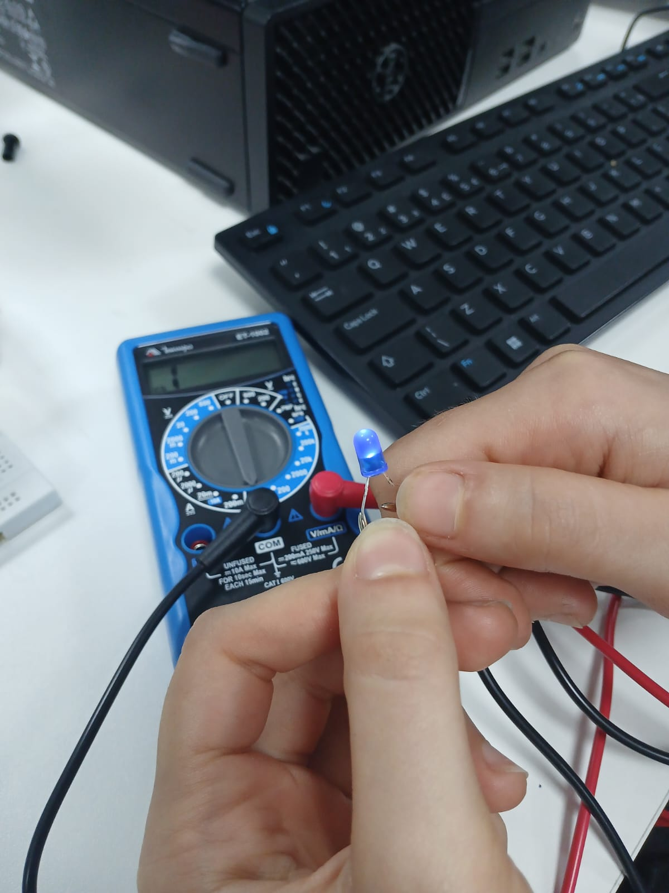

Gestão de Projetos de Automação e TI
Entrada digital
Uma entrada digital é quando o sistema recebe informações em 0 ou 1, chamado de sistema binário.
Fisicamente, uma entrada digital é um pino ou conector em um circuito integrado. Ele conecta o externo ao processador interno. O pino detecta sinais elétricos vindos de sensores, interruptores ou outros dispositivos.
Os materiais geralmente utilizados são os transistores e resistores para estabilizar o sinal, evitando ruídos.
Os estados binários são definidos por níveis de tensão elétrica, em volts. Sendo que baixo (0) é tensão próxima a 0V , e alto (1) é tensão em um nível definido, próximo de 5V. Por exemplo em um sistema de 5V, qualquer tensão acima de cerca de 2.5V pode ser lida como 1, e abaixo como 0. Isso cria uma "zona morta" para tolerar variações, evitando erros.
Sensores analógicos, como os potenciômetros, podem ser transformados em digitais por meio do ADC (Conversor Analógico-Digital).
Saída digital
Uma saída digital gera e transmite dois valores distintos, 0 ou 1. Baseado no sistema binário, isso indica escolhas lógicas, como ligar ou desligar um LED. Isso possibilita uma automação ágil e confiável em circuitos lógicos.
Trata-se de um pino de saída em um chip ou módulo, que libera corrente elétrica para o exterior. O processador interno define o estado do pino, que, por sua vez, aciona componentes externos, como lâmpadas.
Os componentes envolvidos incluem transistores para amplificação de sinais e capacitores para suavização de transições, garantindo estabilidade contra interferências.
Os estados binários correspondem a níveis elétricos determinados. Geralmente, 0 corresponde a cerca de 0V, enquanto 1 é uma tensão elevada em cerca de 5V.
Entrada analógica
Mesmo que uma entrada analógica trabalhe com valores contínuos, ela é convertida em representação binária por meio de um Conversor Analógico-Digital (ADC). O ADC mostra a tensão e a converte em um número binário, como 10 bits (0 a 1023), representando níveis.
Por exemplo, uma tensão de 2.5V em um ADC de 5V poderia virar 512 em binário. Isso simplifica a utilização em software, pois permite comparar ou realizar cálculos com esses valores discretos, mesmo sendo originados de um sistema analógico.
Trata-se de um pino dedicado em um circuito integrado, projetado para receber sinais variáveis provenientes de sensores externos. Opera ao conectar um sensor, como um termistor ou LDR, ao pino que avalia a corrente ou tensão variável.
As entradas analógicas operam em intervalos contínuos de tensão, tipicamente de 0V a uma referência máxima. Como por exemplo, um sensor de luz pode apresentar uma variação de 0V a 5V, e o ADC realiza esse mapeamento de maneira linear. As margens de tolerância evitam sobrecargas, e a resolução (bits do ADC) determina a precisão, onde mais bits oferecem mais detalhes, mas também demandam mais energia.
Saída analógica
O dispositivo converte números binários, 0 e 1, em algo que aparenta ser contínuo, utilizando técnicas como PWM, que significa modulação por largura de pulso. Por exemplo, se mandar um valor binário de 128 em 8 bits, o sinal fica ligado metade do tempo, dando uma média que simula meia potência. Permite ajustes finos, como graduar o volume de um som ou a rotação de um ventilador, mesmo saindo de lógica digital pura.
Fisicamente, trata-se de um pino de saída no chip ou na placa que conduz a corrente para fora. O hardware interno emprega temporizadores e comparadores para criar esse pulso e, de vez em quando, utiliza capacitores para tornar o processo mais suave.
Em volts, a saída opera com tensões variando de 0V a 5V. A resolução em bits determina o quão suave fica: mais bits significam mais detalhes, mas exigem um hardware mais avançado.
Arduino
O Arduino é uma plataforma de prototipagem eletrônica de código aberto, que ajuda a simplificar o desenvolvimento de projetos interativos para pessoas sem tanto conhecimento em eletrônica. Ele contém uma placa microcontroladora equipada com um microcontrolador, pinos para a conexão de sensores, motores e outros componentes. Contém o software Arduino IDE para a escrita de códigos em uma versão simplificada da linguagem C++. Ao conectar os componentes aos pinos, escrever o programa e carregar via USB, o Arduino executa o código repetidamente, lendo entradas e controlando saídas.
Normalmente utilizado para robôs, sensores, luzes automatizadas, automação de residências entre outros.

Microcontrolador
O microcontrolador da placa Arduino Uno, ATMEL ATMEGA328, é um dispositivo de 8 bits da família AVR com arquitetura RISC avançada e com encapsulamento DIP28.
Um microcontrolador é um circuito integrado (chip) que reúne em um único componente um processador central (CPU), memória (RAM e ROM), interfaces de entrada e saída (I/O) e outros periféricos fundamentais, como temporizadores e conversores analógico-digitais. Ele foi projetado para controlar dispositivos específicos em sistemas embarcados, atuando como um "cérebro" compacto e de baixo consumo de energia.
As instruções dos programas guardados na memória são executadas pelo processador. Os periféricos permitem a interação com o ambiente externo, executando tarefas como leitura de sensores, controle de motores e comunicação por meio de protocolos como UART, SPI ou I2C. Opera com tensões baixas, geralmente entre 3 e 5V, e tem um consumo de energia reduzido.
Multímetro
O multímetro é um dispositivo elétrico que combina as funções de amperímetro, que mede corrente elétrica , ohmímetro, que mede a resistência elétrica e voltímetro , que mede a tensão elétrica. É normalmente utilizado por engenheiros, eletricistas, físicos e outros profissionais da área. Um multímetro é usado principalmente para medir tensão em volts, corrente (Amperes) e resistência (Ohms).

Escala de medição
A escala de medição é um conceito importante dentro da estatística e de pesquisas em geral. Serve para classificar informações, o que permite que os dados sejam organizados e analisados da maneira correta. É a escala usada que define quais tipos de análises podem ser feitas e quais conclusões podem ser tiradas.
Existem quatro categorias principais de escalas, cada uma apropriada para diferentes tipos de variáveis e formas de análise: nominal, ordinal, intervalar e de razão.
Escala Nominal: é a forma mais simples de medição. Nela, os dados são apenas colocados em grupos, sem nenhuma ordem ou grau de importância. São apenas categorias diferentes. Por exemplo, a cor dos olhos, gênero, estado civil, tipo de fruta etc.
Escala Ordinal: Além de classificar os dados em categorias, também é possível organizá-las em uma ordem. Porém, ela não indica o quanto uma categoria é maior ou menor que a outra, apenas a posição.
Escala Intervalar: Essa escala permite ordenar os dados e medir a diferença entre eles. Seus valores são numéricos, e a distância entre os pontos da escala é sempre igual.
Escala de Razão: Parecida com a escala intervalar, porém possui um ponto zero real, que representa a ausência da característica medida. O que permite fazer comparações proporcionais.
Lei de Ohm aplicada ao multímetro
A lei de Ohm descreve a relação matemática entre três grandezas elétricas em um circuito, sendo elas a tensão, corrente elétrica e a resistência.
A lei estabelece que a tensão aplicada a um condutor é diretamente proporcional à corrente que circula nele, tendo o resto permanecendo constante. Em outras palavras, se a corrente diminui para uma mesma tensão, a resistência aumenta, e vice-versa. Em diversas de suas funções, o multímetro aplica a Lei de Ohm. Na função ohmímetro, o aparelho aplica uma tensão conhecida a um resistor desconhecido e mede a corrente em relação a ele, para calcular a resistência.

Teste de continuidade
O teste de continuidade é um método utilizado para analisar a operação de um circuito elétrico, incluindo seus componentes e condutores, por meio de um multímetro. Os valores de resistência ôhmica determinam se a passagem de corrente elétrica entre eles é possível ou não.

Monitor serial
O monitor serial é um recurso utilizado no estabelecimento de comunicação entre uma placa Arduino e outros dispositivos, como o computador. Para que seja possível ler informações via comunicação serial da placa arduino no computador, é utilizado a ferramenta serial monitor, encontrada na IDE Arduino.